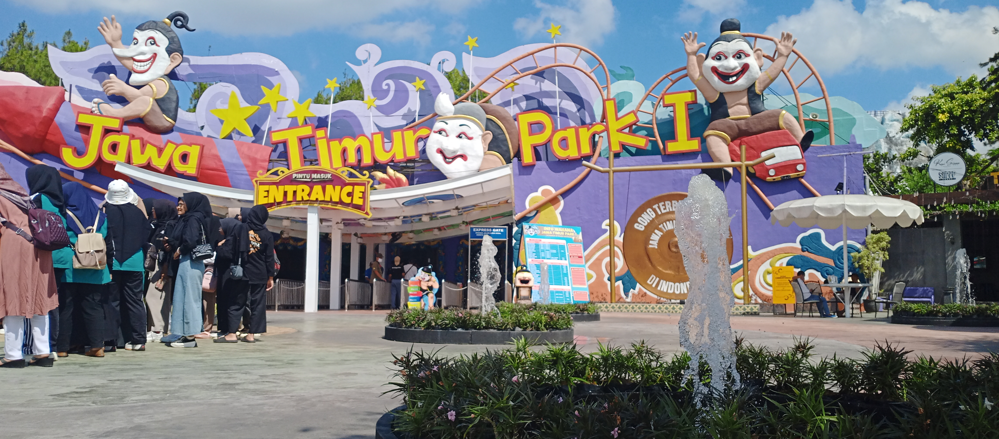
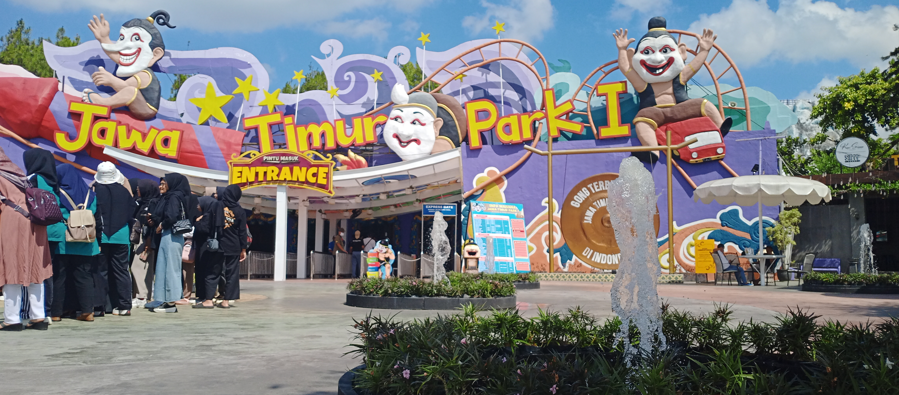

Mengabadikan setiap tawa, cerita, dan momen berharga selama perjalanan kami di SMP 2 Kaliwungu—kenangan yang tak akan pernah pudar.
Jelajahi KenanganAgama Islam
Ipa
Ppkn
Ipa
Bahasa Jawa
Bahasa Indonesia
Ips
Bahasa Inggris
Bimbingan Konseling
Agama Kristen
Bahasa Inggris
Matematika
Informatika
Ips
Prakrya
Pjok
Matematika
Ppkn
Bahasa Indonesia
Bahasa Indonesia
Bimbingan Konseling
Agama Islam
Matematika
"Tiga tahun berlalu begitu cepat, tapi setiap kenangan bersama akan selalu hidup dalam ingatan."
"SMP 2 Kaliwungu bukan sekadar tempat belajar, tapi rumah kedua yang penuh tawa dan cerita berharga."
"Persahabatan yang terjalin di sini adalah harta yang akan kami bawa sepanjang hidup."
"Kegagalan bukan akhir, melainkan awal untuk bangkit dan melangkah lebih jauh."
"Belajar bukan hanya untuk nilai, tapi untuk masa depan yang lebih baik."
"Setiap hari adalah kesempatan baru untuk menjadi pribadi yang lebih baik."
"Mimpi akan menjadi nyata jika disertai usaha dan tindakan yang sungguh-sungguh."
"Kesuksesan lahir dari kebiasaan kecil yang dilakukan dengan konsisten setiap hari."
"Jangan takut gagal, karena dari situlah proses belajar dimulai."
"Masa sekolah adalah waktu terbaik untuk mengenal diri dan menemukan potensi."
"Teman sejati adalah mereka yang tetap ada di saat suka maupun duka."
"Disiplin adalah jembatan antara tujuan dan pencapaian."
"Ilmu yang bermanfaat adalah investasi terbaik untuk masa depan."
"Kesederhanaan adalah kecantikan sejati yang tak pernah pudar."
"Kejujuran adalah mata uang yang berlaku di semua zaman."
"Mimpi besar dimulai dengan langkah kecil yang berani."
"Kreativitas adalah kecerdasan yang bersenang-senang."
"Kebaikan yang kita sebarkan hari ini akan menjadi kebahagiaan di masa depan."
"Kesuksesan sejati adalah ketika kita bisa bermanfaat bagi orang lain."
"Teknologi adalah alat, tapi manusia tetaplah yang paling penting."
"Konsistensi adalah kunci dari semua prestasi besar."
"Kecantikan sejati berasal dari hati yang baik dan pikiran yang positif."
"Semangat pantang menyerah akan membawa kita melewati semua rintangan."
"Kualitas diri kita ditentukan oleh bagaimana kita menghadapi tantangan."
"Kepemimpinan dimulai dengan kemampuan memimpin diri sendiri."
"Kesabaran adalah teman terbaik dalam mencapai kesuksesan."
"Masa depan yang cerah dimulai dengan persiapan hari ini."
"Kecerdasan emosional sama pentingnya dengan kecerdasan intelektual."
"Kebaikan kecil yang kita lakukan hari ini bisa berarti besar bagi orang lain."
Tim voli IX A meraih juara 3 dalam kompetisi selepas ujian disekolah.
2024
Penampilan kreatif kelas IX A memukau juri dan meraih juara pertama.
2024
Mendapat penghargaan sebagai kelas terdisiplin selama 3 bulan berturut-turut.
2025
Masih inget ngga?, momen pertama kali kita ketemu sebagai satu angkatan! Awalnya masih pada gugup, ada yang diem-diem cool, ada yang excited banget. Tapi lama-lama, semua ketegangan berubah jadi obrolan seru, ketawa bareng, dan kebersamaan yang nggak bakal tergantikan. Dari strangers jadi family—itu vibe yang keren tau!
Momen haru dan lawak memberi kenangan berkesan ke bapak wali kelas
Kompetisi seru antar kelas yang mempererat persahabatan dan menguji sportivitas serta kerja sama tim.

Seru, random, penuh tawa—outing class ke Malang bakal jadi cerita yang nggak akan kita lupain. Dari perjalanan rame-rame, foto yang kocak, sampai momen kebersamaan yang makin erat. Bukan cuma tempat yang kita kunjungi, tapi juga vibes bareng satu angkatan yang bikin semuanya spesial. Memories ini bakal tetap ada, kapan pun kita bernostalgia. Best trip, best squad. Sampai jumpa di petualangan berikutnya! .
 

Titik akhir perjalanan kami di SMP 2 Kaliwungu—penuh haru, bahagia, dan kenangan tak terlupakan. Saatnya melangkah ke jenjang lebih tinggi, membawa cerita dan pelajaran berharga. Bukan perpisahan, tapi awal baru!.


Ketua Kelas
.
Wakil Ketua
Kreatif dan inovatif, selalu punya ide segar untuk kegiatan angkatan dan gampang emosi.